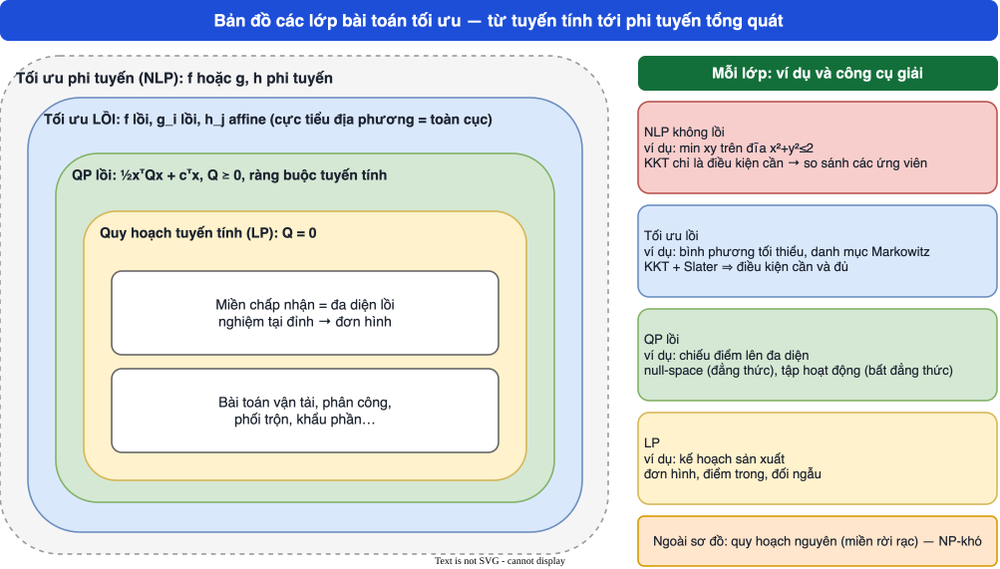

MODULE 1
Tập lồi và hàm lồi
Nền tảng của toàn bộ môn tối ưu lồi: tập lồi, bao lồi, siêu phẳng, polyhedron, hàm lồi và tiêu chuẩn Hessian. Đây cũng là chương nối trực tiếp từ giải tích lồi trong môn Quy hoạch tuyến tính (Chương II) sang tối ưu lồi.
- Nêu định nghĩa và kiểm tra tính lồi của một tập bằng định nghĩa, bằng phép giao/tổng, hoặc nhận ra polyhedron, hình cầu, ellipsoid.
- Phát biểu và dùng bất đẳng thức Jensen, điều kiện cấp 1 và cấp 2 của hàm lồi.
- Tính Hessian và kết luận lồi/lõm/không xác định bằng giá trị riêng hoặc minor chính, tránh bẫy “minor dẫn đầu chưa đủ cho nửa xác định dương”.
- Nhận biết các phép toán bảo toàn tính lồi và chứng minh được các bài tập điển hình (max của hàm lồi, tổng Minkowski, khoảng cách tới tập lồi).
Bài giảng
Dùng phím ← → hoặc các nút để chuyển slide; bấm chấm tròn để nhảy tới slide bất kỳ; “Toàn màn hình” để trình chiếu. Mỗi slide có khung “📖 Giải thích cho người mới bắt đầu” và ảnh gốc trang slide của giảng viên.
Công thức cốt lõi
- \(P\)ma trận đối xứng (phần bậc hai)
- \(q\)vectơ hệ số bậc nhất
- \(r\)hằng số
| Khái niệm | Xác định dương | Nửa xác định dương |
|---|---|---|
| Định nghĩa | \(x^\top Ax>0\ \forall x\ne0\) | \(x^\top Ax\ge0\ \forall x\) |
| Giá trị riêng | mọi \(\lambda_i>0\) | mọi \(\lambda_i\ge0\) |
| Minor | mọi minor dẫn đầu \(>0\) | mọi minor chính (không chỉ dẫn đầu) \(\ge0\) |
| Hàm | lồi chặt (nếu mọi x) | lồi |
Bối cảnh lý thuyết và lịch sử
Bất đẳng thức Jensen mang tên nhà toán học Đan Mạch Johan Jensen, người công bố dạng tổng quát cho hàm lồi năm 1906. Khái niệm tập lồi gắn với công trình hình học các vật thể lồi của Hermann Minkowski đầu thế kỷ XX; định lý biểu diễn “polytope = bao lồi hữu hạn điểm” mang tên Minkowski–Weyl.
Giải tích lồi được hệ thống hóa thành một ngành độc lập trong cuốn Convex Analysis của R. T. Rockafellar (1970). Tối ưu lồi hiện đại, gồm phương pháp điểm trong, được trình bày trong giáo trình Boyd & Vandenberghe Convex Optimization (2004) — giáo trình chính của học phần này.
🔎 Case study: hồi quy bình phương tối thiểu
Bài toán bình phương tối thiểu (đường hồi quy): cho 5 điểm đo \((x_i,y_i)\) như bảng dưới, tìm đường thẳng \(y=\theta_0+\theta_1x\) làm cực tiểu \(f(\theta)=\|A\theta-y\|^2\).
| x | 1 | 2 | 3 | 4 | 5 |
|---|---|---|---|---|---|
| y | 2.1 | 3.9 | 6.2 | 7.8 | 10.1 |
- Ma trận thiết kế \(A=[1,\ x]\) cỡ \(5\times2\). Hàm \(f(\theta)=\theta^\top A^\top A\theta-2y^\top A\theta+y^\top y\) là hàm toàn phương.
- Hessian \(\nabla^2f=2A^\top A=\begin{pmatrix}10&30\\30&110\end{pmatrix}\), giá trị riêng \(1.6905\) và \(118.3095\) đều dương ⇒ \(\nabla^2f\succ0\) ⇒ f lồi chặt.
- Vì f lồi chặt khả vi nên điểm dừng \(\nabla f=0\) là cực tiểu toàn cục duy nhất: giải phương trình chuẩn \(A^\top A\theta=A^\top y\).
- Kết quả (giải bằng code): \(\theta_0=0.05\), \(\theta_1=1.99\); tổng bình phương sai số \(f(\theta^*)=0.107\).
Chỉ cần kiểm tra Hessian \(2A^\top A\succ0\) (khi các cột của A độc lập tuyến tính), ta biết ngay mô hình hồi quy có nghiệm duy nhất và không cần lo mắc kẹt cực tiểu địa phương.
Ví dụ chi tiết (có lời giải từng bước)
Bấm từng ví dụ để mở lời giải. Các con số Hessian/giá trị riêng lấy từ script kiểm chứng.
Ví dụ 1 — Hessian của \(f=x^2+xy+y^2\) (slide tr.46)
- Đạo hàm riêng: \(f_x=2x+y\), \(f_y=x+2y\).
- Đạo hàm cấp hai: \(f_{xx}=2\), \(f_{yy}=2\), \(f_{xy}=f_{yx}=1\).
- Hessian \(H=\begin{pmatrix}2&1\\1&2\end{pmatrix}\): \(\Delta_1=2>0\), \(\Delta_2=4-1=3>0\) ⇒ xác định dương. Giá trị riêng (code): \(1.0\) và \(3.0\).
- Kết luận: f lồi chặt trên \(\mathbb R^2\).
Ví dụ 2 — Hàm \(3x_1^2+3x_2^2-4x_1x_2\) (bài tập tham khảo C8)
- \(H=\begin{pmatrix}6&-4\\-4&6\end{pmatrix}\).
- \(\Delta_1=6>0\), \(\Delta_2=36-16=20>0\) ⇒ xác định dương; giá trị riêng \(2.0\) và \(10.0\).
- Kết luận: lồi chặt. Hàm thứ hai \(4x_1^2+x_2^2-x_1-2x_2\) có \(H=\mathrm{diag}(8,2)\succ0\) ⇒ lồi chặt (số hạng bậc nhất không đổi Hessian).
Ví dụ 3 — Bốn hàm ở bài tập slide tr.54
(a) \(f=e^x-1\): \(f^{\prime\prime}=e^x>0\) ⇒ lồi.
(b) \(f=xy\): \(H=\begin{pmatrix}0&1\\1&0\end{pmatrix}\), giá trị riêng \(-1,1\) (mọi điểm) ⇒ không lồi, không lõm.
(c) \(f=1/(xy)\): \(H=\begin{pmatrix}\frac{2}{x^3y}&\frac1{x^2y^2}\\\frac1{x^2y^2}&\frac2{xy^3}\end{pmatrix}\); \(\Delta_1>0\), \(\Delta_2=\frac{4-1}{x^4y^4}>0\) ⇒ lồi chặt. Kiểm số (code) giá trị riêng nhỏ nhất tại \((1,1),(2,1),(1,3),(0.5,0.5)\): 1, 0.1743, 0.0539, 16 — đều dương.
(d) \(f=x/y\): \(H=\begin{pmatrix}0&-1/y^2\\-1/y^2&2x/y^3\end{pmatrix}\), \(\det H=-1/y^4<0\) ⇒ không lồi, không lõm. Giá trị riêng nhỏ nhất (code) tại các điểm mẫu: -0.4142, -0.2361, -0.0801, -1.6568 — đều âm.
Ví dụ 4 — Chứng minh “max của các hàm lồi là hàm lồi”
Với \(g=\max_if_i\): \(f_i(\theta x+(1-\theta)y)\le\theta f_i(x)+(1-\theta)f_i(y)\le\theta g(x)+(1-\theta)g(y)\). Lấy max theo i ở vế trái ⇒ \(g(\theta x+(1-\theta)y)\le\theta g(x)+(1-\theta)g(y)\). Kiểm số: lấy ngẫu nhiên 20 000 bộ \((x,y,\theta)\) cho \(\max\{x^2,(x-2)^2\}\): số vi phạm = 0; hàm \(x^3\) (không lồi) vi phạm 10126 lần.
Ví dụ 5 — Bẫy “minor dẫn đầu” cho nửa xác định dương
Ma trận \(A=\begin{pmatrix}0&0\\0&-1\end{pmatrix}\): \(\Delta_1=0\), \(\Delta_2=0\), cả hai \(\ge0\); nếu chỉ nhìn dẫn đầu ta tưởng \(A\succeq0\). Nhưng \(x=(0,1)\) cho \(x^\top Ax=-1<0\), và minor chính \(a_{22}=-1<0\) (giá trị riêng \(0,-1\)) đã phát hiện ra điều đó.
Ngược lại \(\begin{pmatrix}1&1\\1&1\end{pmatrix}\) có giá trị riêng \(0,2\) ⇒ nửa xác định dương, không xác định dương, \(\det=0\).
Ví dụ 6 — Hợp hai tập lồi không lồi; tổng Minkowski
\([0,1]\cup[2,3]\) không chứa \(1.5\). Ngược lại \([0,1]+[2,3]=[2,4]\) là đoạn (lồi). Tổng hai hình tròn bán kính 1 và 2 cùng tâm gốc là hình tròn bán kính 3.
Sơ đồ tổng hợp

Thực hành tương tác
Cảnh báo bẫy diễn giải sai
Sai. Chỉ giao và tổng Minkowski bảo toàn tính lồi.
Xác định dương: chỉ cần minor dẫn đầu \(>0\). Nửa xác định dương: phải xét mọi minor chính hoặc giá trị riêng.
Chiều thuận đúng (Hessian \(\succ0\) ⇒ lồi chặt), chiều nghịch sai: \(x^4\) lồi chặt nhưng \(f^{\prime\prime}(0)=0\).
Điều kiện cấp 2 đòi hỏi \(\nabla^2f(x)\succeq0\) trên toàn miền. \(f=xy\) có Hessian cố định nhưng không xác định; \(f=x^3\) có \(f^{\prime\prime}>0\) ở \(x>0\) mà vẫn không lồi trên \(\mathbb R\).
\(e^x\) lồi nhưng không đạt giá trị nhỏ nhất. Sự tồn tại nghiệm cần thêm điều kiện (bị chặn, đóng, coercive — Module 0 và 3).
Slide viết \(P\succeq0\); để ellipsoid bị chặn cần \(P\succ0\). Xem trang “Kiểm chứng”.
Ngân hàng câu hỏi (118 câu)
Gồm 101 câu trắc nghiệm (gồm 36 câu đúng/sai), 9 câu điền số và 8 câu tự luận có đáp án mẫu. Bấm một đáp án là biết đúng/sai ngay và có giải thích; mỗi câu có nút “↺ Làm lại câu này”, cuối bài có “↺ Làm lại toàn bộ bài”. Mỗi câu gắn nhãn nguồn: gốc từ slide · tham khảo · biên soạn thêm.
- Boyd & Vandenberghe, Convex Optimization: Ch.2 (Convex sets, tr.21) và Ch.3 (Convex functions, tr.67) — file
bv_cvxbook.pdf. - Bài tập tham khảo (Studocu, rất cũ và khác ngành, chỉ để luyện thêm): C1–C8 về chứng minh tính lồi; đã đưa vào ngân hàng câu hỏi với nhãn “tham khảo”.
- Tiếp theo: Module 2 dùng trực tiếp khái niệm “bài toán lồi” (f lồi, \(g_i\) lồi, \(h_j\) affine).
NLP-work/verify trong dự án).